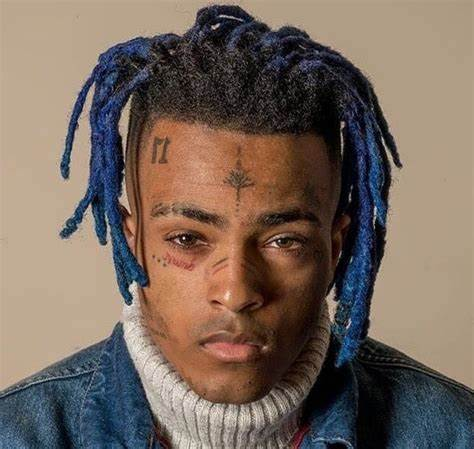

XXXtentacion
Jahseh Dwayne Onfroy, mejor conocido en el medio artístico como XXXTentacion y un poco menos por apodos como X y Young Dagger Dick, fue un rapero, cantante y compositor estadounidense que nació en Plantation, Florida, Estados Unidos, el 23 de enero de 1998 y falleció el 18 de junio de 2018 en Miami, Florida, tras ser baleado en su carro a quemarropa. Su ascendencia étnica era de origen egipcio, indio, alemán, jamaicano e italiano.
La carrera música de XXXTentacion inició en junio de 2013, después de componer su primera canción "News / Flock", cuando se encontraba en detención juvenil por cargos de posesión de armas. Durante el tiempo que estuvo detenido el rapero conoció a Stokeley Clevon Goulbourne con quien mantuvo una excelente relación de amistad y comenzó a practicar el freestyling
XXXTentación fue asesinado la tarde del lunes 18 de junio en Deerfield Beach, al norte de Miami, Florida, Estados Unidos, tras haber salido del concesionario de motocicletas RIVA Motorsports, en Deerfield Beach.Tras el fuerte suceso, el artista fue trasladado al hospital por las unidades de emergencia en donde murió, de acuerdo con la policía del condado de Broward.
